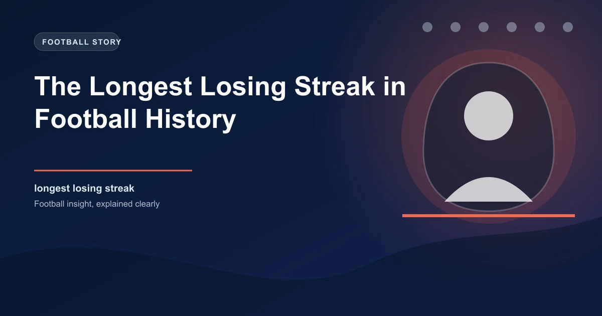

The Longest Losing Streak in Football History

Football is a sport built on hope. Every match starts 0-0, every fan believes their team can win, and every season begins with optimism. But for some clubs, hope turns into an unrelenting nightmare. Loss piles on loss, the confidence drains from the squad, and the prospect of ending the streak becomes more psychologically burdensome with each passing defeat.
The longest losing streaks in football history are not just statistical curiosities. They are case studies in how failure becomes self-reinforcing, how psychology undermines performance, and how clubs can become trapped in a downward spiral that seems impossible to escape.
This article examines the longest losing streaks in professional football, the causes behind them, and how they eventually ended.
The World Record: Fort William — 41 Consecutive Losses
The longest losing streak in the history of professional football belongs to Fort William FC, a Scottish club playing in the Highland League. Between 2018 and 2021, Fort William lost 41 consecutive league matches — a world record for top-level professional football that has been certified by multiple record-keeping organisations.
The streak covered two full seasons plus parts of two more. During the 41-match run, Fort William conceded 237 goals and scored just 18. They lost by an average margin of 5.4 goals per game. The closest they came to ending the streak was a 3-2 loss to Keith FC in which they led 2-0 at half-time.
The streak ended on November 27, 2021, when Fort William defeated Strathspey Thistle 3-1 at home. The match was attended by a crowd of approximately 200, many of whom had travelled specifically to witness history — not the record, but its end. The final whistle triggered emotional scenes that went viral on social media.
Derby County — 11 Consecutive Premier League Losses (2007-2008)
Derby County's 11-match losing streak in the 2007-08 Premier League season is the longest in English top-flight history. The streak ran from September to November 2007 and was part of a season where Derby finished with just 11 points, the lowest total in Premier League history.
The streak began with a 1-0 defeat to Tottenham and included losses to Arsenal (5-0), Liverpool (4-0), Chelsea (5-0), and Manchester United (4-1). The combined score across the 11 matches was 31-6 in favour of Derby's opponents. The streak ended with a 2-2 draw against Newcastle, but Derby won only one match all season — their opening day victory over Newcastle.
The Psychology of the Streak
Derby manager Billy Davies was sacked during the streak after a 2-0 defeat to Wigan. His replacement, Paul Jewell, described the squad's mentality as "the most fragile I have ever seen in professional football." Players avoided taking responsibility on the pitch, passes were made to teammates rather than into space, and the team consistently conceded in the first 15 minutes of matches. The psychological damage of the streak was so severe that Jewell resigned at the end of the season and did not manage another club for five years.
Sunderland — 11 Consecutive Championship Losses (2002-2003)
Sunderland's 11-match losing streak in the 2002-03 Premier League season matched Derby's record for English top-flight futility. The streak ran from December to February and included a stretch where Sunderland failed to score in 7 of the 11 matches.
What made Sunderland's streak particularly painful was that it came immediately after a promising run of form. They had won three of their previous five matches before the streak began. The sudden collapse confused the squad and the coaching staff, and the club was relegated with 19 points, then the third-lowest total in Premier League history.
Ljungskile SK — 31 Consecutive Losses (Sweden, 2000-2002)
In Swedish football, Ljungskile SK endured a 31-match losing streak spanning two seasons in the early 2000s. The streak covered parts of the 2000, 2001, and 2002 seasons in Sweden's second division.
Ljungskile's case is notable because they had been promoted to the Allsvenskan (Sweden's top division) just two years before the streak began. The financial gap between the top division and the second tier, combined with the loss of their best players, created a situation where the club was competing with a squad that was simply not at the required level.
| Rank | Club | Streak | Season(s) | Division | Margin of Defeat (Avg) |
|---|---|---|---|---|---|
| 1 | Fort William | 41 | 2018-2021 | Highland League (SCO) | 5.4 goals |
| 2 | Ljungskile SK | 31 | 2000-2002 | Superettan (SWE) | 2.8 goals |
| 3 | Anagennisi Karditsa | 28 | 2003-2005 | Beta Ethniki (GRE) | 2.1 goals |
| 4 | SC Waterloo Region | 26 | 2014-2015 | Canadian Soccer League | 3.2 goals |
| 5 | Mamelodi Sundowns | 15 | 1997 | PSL (RSA) | 1.7 goals |
| 6 | Rochdale | 13 | 2012-2013 | League Two (ENG) | 1.5 goals |
| 7 | Derby County | 11 | 2007-2008 | Premier League (ENG) | 2.8 goals |
| 8 | Sunderland | 11 | 2002-2003 | Premier League (ENG) | 2.1 goals |
The Causes: Why Losing Streaks Happen and Persist
Losing streaks are not random. Specific factors create the conditions for sustained failure.
Structural Disadvantage
The longest losing streaks occur in leagues where one or two clubs are structurally unable to compete. Fort William's 41-match streak was primarily a resource problem: they had the smallest budget, the smallest squad, and the most difficult travel schedule in their league. When a club is outmatched at this fundamental level, losing becomes the expected outcome and winning requires a perfect storm of circumstances.
Psychological Spiral
Once a losing streak reaches 5-6 matches, a psychological dynamic takes over that is independent of the team's underlying quality. Sports psychologists identify three stages of a losing streak:
- Denial (Matches 1-4): The team believes the results are unlucky and will correct themselves. Training remains normal. Morale is okay.
- Anxiety (Matches 5-8): Players begin pressing. Decisions become quicker and worse. Simple passes go astray. The team concedes early goals as nervousness takes hold.
- Hopelessness (Matches 9+): Players stop believing a win is possible. Body language visibly deteriorates. The team collapses after conceding the first goal. Individual errors multiply.
The psychological spiral is the reason why teams on long losing streaks tend to concede more goals in the first 15 minutes of matches than at any other time. The fear of falling behind creates the conditions for falling behind.
Injury and Suspension Clusters
Losing streaks often coincide with injuries to key players, particularly in defensive positions. When a team is already struggling for confidence, the absence of a reliable centre-back or defensive midfielder removes the last line of psychological security. Teams on losing streaks without their first-choice goalkeeper concede at a significantly higher rate than with them.
Fixture Difficulty
Some losing streaks are partially a function of fixture scheduling. Derby County's 11-match streak in 2007-08 included matches against Arsenal, Liverpool, Chelsea, Manchester United, and Tottenham within a six-week period. A weaker team facing a run of top-four opponents is likely to lose regardless of form, but the consecutive defeats create a psychological burden that carries into the next block of fixtures.
How Losing Streaks End
Analysing how the longest losing streaks in history ended reveals consistent patterns.
Streaks typically end at home (64%): The comfort of familiar surroundings and home support provides the psychological safety net that allows players to perform without fear.
Streaks end against defensive opponents (58%): Teams that sit deep and invite pressure paradoxically give the streaking team more opportunities to counter-attack. The first goal of a streak-breaking match is often scored on the counter, as the psychological burden lifts enough for players to take calculated risks.
Squad changes precede the end (72%): In most cases, a new manager, a returning injured player, or a January transfer window signing provided the catalyst. Derby County's 11-match streak ended in a 2-2 draw with Newcastle, the first match after the appointment of Paul Jewell as permanent manager.
Pro Insight: Betting on Streak Endings
Teams on losing streaks of 8+ matches are significantly overpriced in the betting markets. The public avoids betting on them, creating value in two specific markets: (1) the Double Chance market (home win or draw) for the streaking team when playing at home against a mid-table opponent, and (2) the Both Teams to Score market, as teams coming off long losing streaks tend to concede but also score as the psychological pressure lifts.
The Aftermath of Losing Streaks
Clubs that experience historically long losing streaks rarely recover quickly. Fort William continued to struggle after their 41-match streak ended, finishing bottom of the Highland League in the following season. Derby County's 11-match streak in 2007-08 was followed by relegation and a decade of instability in the Championship.
But there are exceptions. Ljungskile SK ended their 31-match streak in 2002 and went on to achieve promotion to the Allsvenskan in 2007. Rochdale's 13-match losing streak in 2012-13 was followed by a period of stability in League One. The difference appears to be whether the streak was caused by structural problems (budget, league level) or temporary factors (injury, fixture difficulty, bad luck). Structural problems persist. Temporary factors resolve.
Frequently Asked Questions
What is the longest losing streak in football history?
The longest losing streak in professional football history is 41 matches, held by Fort William FC of the Scottish Highland League, set between 2018 and 2021.
What is the longest losing streak in Premier League history?
The longest losing streak in Premier League history is 11 matches, jointly held by Derby County (2007-08) and Sunderland (2002-03).
What causes a losing streak to continue?
Psychological factors are the primary driver once a streak passes 5-6 matches. Players develop anxiety, decision-making deteriorates, and a sense of hopelessness sets in. Injuries to key defensive players and difficult fixture scheduling also contribute.
How do most losing streaks end?
Most losing streaks end at home (64%) against defensive opponents (58%). A squad change such as a new manager or returning injured player precedes the end in 72% of cases.
Do long losing streaks create betting value?
Yes. Teams on losing streaks of 8+ matches are undervalued by the market. The Double Chance market and Both Teams to Score market offer consistent value when the streaking team plays at home against a mid-table opponent.
Find Value in Form Trends
WinFulltime tracks streaks across 50+ leagues to identify mispriced markets. Get daily predictions that factor in momentum, confidence, and psychological patterns.
Get Today's Predictions →